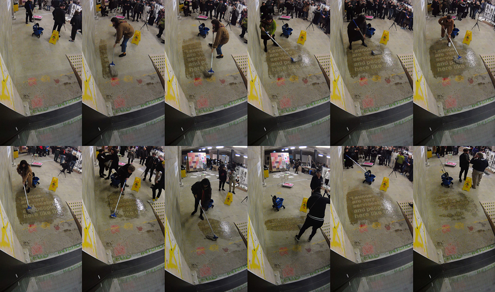
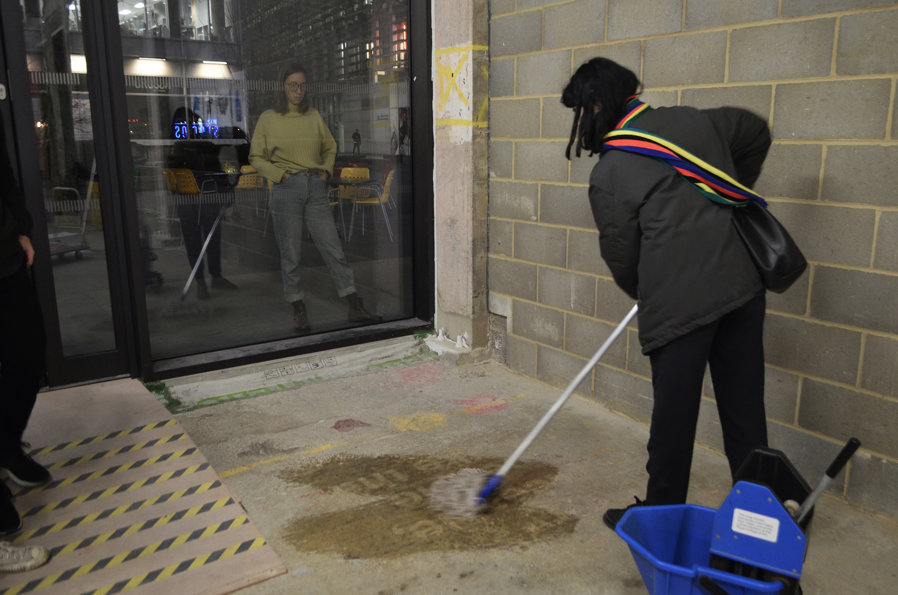

"People here like that", 2020
 Specification of the piece:
Water-repellent on concrete.
Description:
This project is research-led from a series of conversations with all of the Royal College of Art cleaners. When I started at RCA, I realised the outsourced cleaners were from different South American's countries (Colombia, Ecuador and Bolivia). Since then, I have been looking at the interrelation between identity and labour – Latinos coming from these countries and the cleaning sector within London.